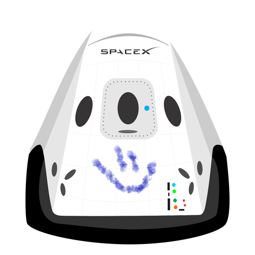

Hyperblog el blog del futuro
tu blog de cabecera
este es el titulo atractivo he interesante del post
aqui vamos ha explicar todo el tipo de cosas que se pueden hacer con las ramas

los blogs son la mejor forma de compartir informaciòn y tus ideas. Mucho mas que ir a una conferencia o salir en youtube. Excepto si eres rockstar. Pero estadisticamente no lo eres... por ahora.
Suscribete y dale like, pero siempre debes de tenerlo en cuenta